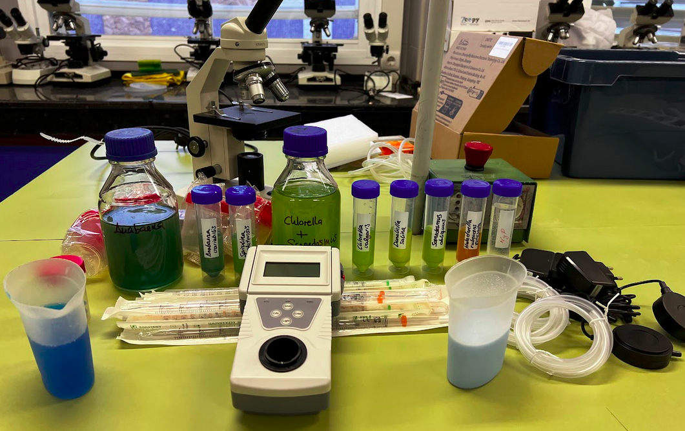

Situación de partida: Nuestro proyecto
En nuestro Ciclo de Grado Básico de Alojamiento y Lavandería, trabajamos con aguas residuales cargadas de productos químicos de limpieza que deben ser depurados para no contaminar el agua de nuestro río y de nuestra costa.
Tal como hemos visto en nuestra visita a la EDAR de Chiclana de la Frontera, las microalgas ayudan a depurar las aguas residuales, sacando también como beneficio la transformación del dióxido de carbono en oxígeno a través de la fotosíntesis y producir una biomasa rica para elaborar otros productos como cosméticos, abono o biodiésel.
Con este proyecto nos vamos a convertir en auténticos científicos y científicas para ver si podemos depurar el agua residual que producimos en la lavandería.
En el laboratorio vamos a hacer un cultivo de microalgas en tres medios distintos:
- Agua destilada con aporte de nutrientes (nitrógeno y fósforo).
- Agua de nuestra lavandería.
- Agua de nuestra lavandería con aporte de nutrientes (nitrógeno y fósforo).
Y vamos a medir el crecimiento de nuestra colonia con un aparato que mide la turbidez del agua. Con los datos que obtengamos vamos a representar la gráfica de la función de crecimiento y vamos a sacar conclusiones de nuestro estudio de depurado de las aguas residuales de nuestra lavandería, que presentaremos en un póster científico realizado con Canva.

Imagen de nuestro laboratorio y del material que vamos a usar
En este Proyecto vamos a trabajar:
- El método científico.
- Los Objetivos del Desarrollo Sostenible.
- Uso del laboratorio.
- Análisis de datos y gráficas de funciones de la vida cotidiana.